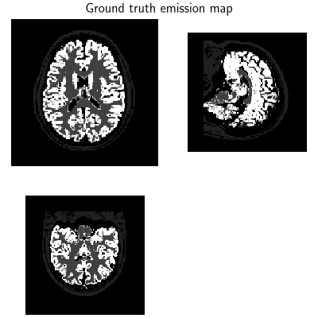
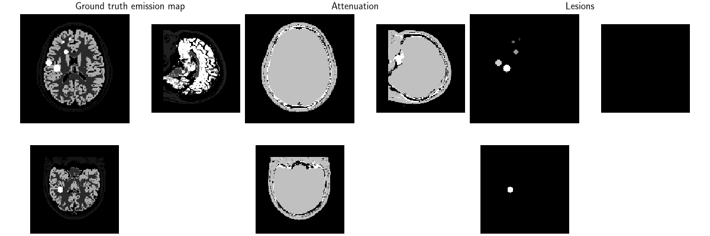
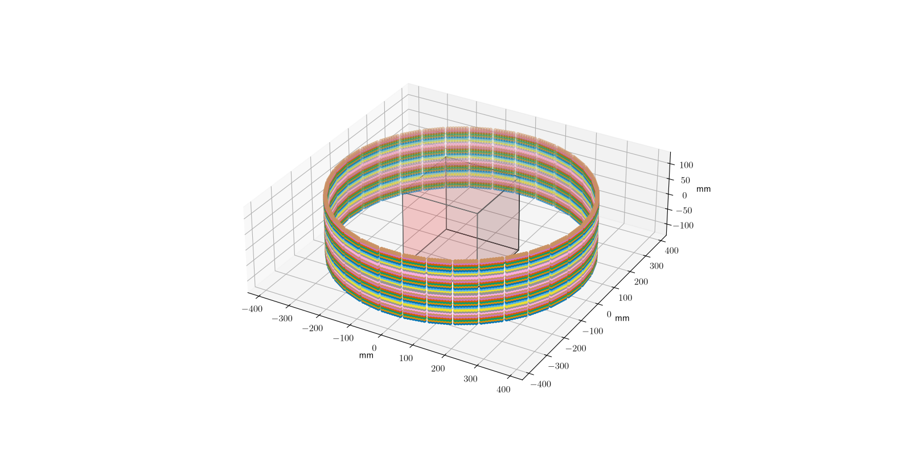
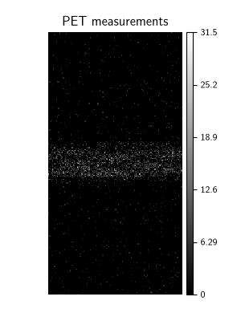
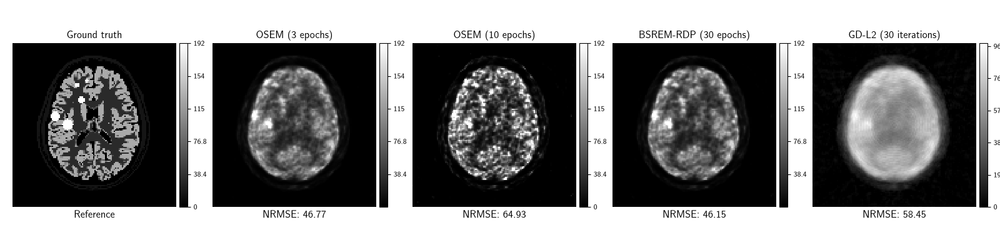
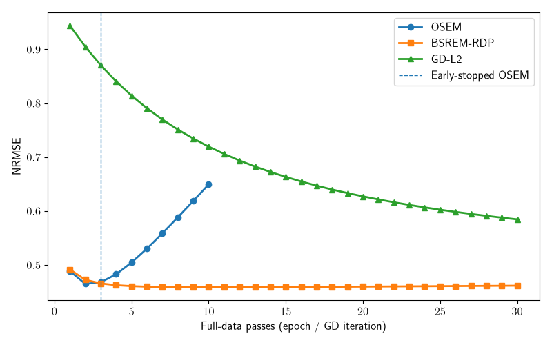
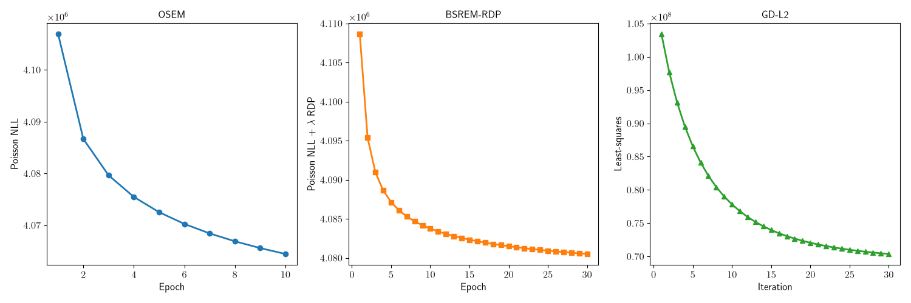
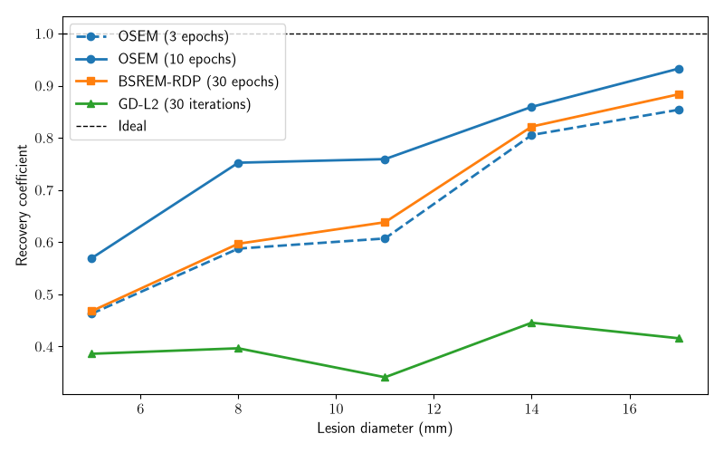

Note
New to DeepInverse? Get started with the basics with the 5 minute quickstart tutorial..
3D PET reconstruction with the Brainweb dataset#
This example reconstructs a volume from the BrainWeb casperdcl/brainweb positron emission tomography (PET) dataset. We compare standard PET reconstruction algorithms with methods that support penalized objective functions.
OSEM and BSREM minimize the Poisson negative log-likelihood
and BSREM additionally uses the Relative Difference Prior (RDP)
deepinv.optim.RDP as \(\regname\) in
\(f(x)+\lambda\reg{x}\). RDP favors sharp transitions in reconstructed
images and adapts to the local signal level, which is particularly useful for
emission tomography where the dynamic range can be large. We also demonstrate
general-purpose gradient descent with a least-squares objective.
Note
This is a large 3D example and is intended to run on a CUDA-capable
machine. It requires the brainweb and parallelproj packages. Install
them with pip install brainweb parallelproj.
import matplotlib.pyplot as plt
import parallelproj
import torch
from array_api_compat import torch as torch_compat
from torch.utils.data import DataLoader
import deepinv as dinv
from deepinv.datasets import BrainWebPET
from deepinv.physics import PET
Load a BrainWeb volume#
We begin by loading a 3D volume from the BrainWeb dataset through deepinv.datasets.BrainWebPET.
Once batched, volumes follow DeepInv’s (B, C, D, H, W) convention.
Because much of each volume is empty, we center-crop it to reduce memory use.
device = torch.device("cuda" if torch.cuda.is_available() else "cpu")
volume_size = (120, 120, 120)
def center_crop_3d(volume):
crop_slices = tuple(
slice((size - crop) // 2, (size + crop) // 2)
for size, crop in zip(volume.shape[-3:], volume_size, strict=True)
)
return volume[(..., *crop_slices)]
dataset = BrainWebPET(subject_ids=4, transform=center_crop_3d, use_dict_output=True)
dataloader = DataLoader(dataset, batch_size=1, shuffle=False)
batch = next(iter(dataloader))
x = batch["x"].to(device)
dinv.utils.plot_ortho3D(x, titles="Ground truth emission map", figsize=(4, 4))

/local/jtachell/deepinv/deepinv/deepinv/utils/plotting.py:1346: UserWarning: This figure was using a layout engine that is incompatible with subplots_adjust and/or tight_layout; not calling subplots_adjust.
plt.subplots_adjust(hspace=0.05, wspace=0.05)
Add hot lesions#
A common application of emission tomography is tumor detection.
Although the original BrainWeb volumes contain no lesions, deepinv.datasets.BrainWebPET
can add synthetic lesions with configurable properties such as size and intensity.
Here, we add five lesions with increasing diameters and equal intensity.
lesion_diameters = [5, 8, 11, 14, 17] # mm
lesion_dataset = BrainWebPET(
subject_ids=4,
transform=center_crop_3d,
lesion_diameters=lesion_diameters,
lesion_kwargs={
"intensity": [192.0] * len(lesion_diameters),
"blur": [0.0] * len(lesion_diameters),
"thresh": 30,
},
seed=0,
use_dict_output=True,
)
lesion_dataloader = DataLoader(lesion_dataset, batch_size=1, shuffle=False)
batch = next(iter(lesion_dataloader))
x = batch["x"].to(device)
attenuation = batch["params"]["attenuation"].to(device)
lesion_mask = batch["params"]["lesion_mask"].to(device)
dinv.utils.plot_ortho3D(
[x, attenuation, lesion_mask],
titles=["Ground truth emission map", "Attenuation", "Lesions"],
figsize=(12, 4),
)

Define scanner geometry and construct PET physics#
We define the acquisition geometry with parallelproj.
To accommodate limited GPU memory, we halve the number of detector bins per polygon
side and double their spacing.
scanner = parallelproj.pet_scanners.DemoPETScannerGeometry(
torch_compat,
dev=device,
num_sides=34,
num_lor_endpoints_per_side=8,
lor_spacing=8,
)
# We can now configure the acquisition with :class:`deepinv.physics.PET`. In
# addition to the scanner geometry, we specify the point-spread function and
# the patient-dependent attenuation map.
physics = PET(
img_size=x.shape[2:],
voxel_size=(2, 2, 2),
scanner=scanner,
attenuation=attenuation,
fwhm_data_mm=3.0,
gain=1.0,
normalize=True,
normalize_counts=True,
device=device,
)
physics.plot_geometry()

Acquisition simulation#
We simulate a relatively low-count acquisition with approximately 5,000,000 counts. A spatially uniform background provides a simple approximation of random and scattered coincidences. Its expected event count is 20% of the expected true coincidence count.
# .. tip:
#
# Alternatively, instead of simulating the acquisition, we could load real sinogram data matching this acquisition geometry here.
expected_signal = physics.A(x)
target_prompt_counts = 5e6
background_to_signal_ratio = 0.2
background = torch.full_like(
expected_signal,
background_to_signal_ratio * expected_signal.mean(),
)
gain = (expected_signal.sum() + background.sum()).item() / target_prompt_counts
physics.noise_model.update_parameters(gain=gain)
# The sinogram is drawn once from the combined signal and background rate.
physics.update(background=background)
torch.manual_seed(0)
y = physics(x)
# We verify that the realized count approximately matches the target, then plot
# a slice of the resulting sinogram.
realized_prompt_counts = round((y / gain).sum().item())
print(
f"Expected prompt counts: {target_prompt_counts:,}; "
f"realized: {realized_prompt_counts:,}; "
f"background fraction: "
f"{background_to_signal_ratio / (1 + background_to_signal_ratio):.1%}"
)
dinv.utils.plot(
[y[..., y.shape[-1] // 2]],
["PET measurements"],
cbar=True,
figsize=(3, 4),
)

Expected prompt counts: 5,000,000.0; realized: 4,999,186; background fraction: 16.7%
/local/jtachell/deepinv/deepinv/deepinv/utils/plotting.py:510: UserWarning: set_ticklabels() should only be used with a fixed number of ticks, i.e. after set_ticks() or using a FixedLocator. Otherwise, ticks may be mislabeled.
colbar.set_ticklabels(true_labels)
/local/jtachell/deepinv/deepinv/deepinv/utils/plotting.py:530: UserWarning: This figure was using a layout engine that is incompatible with subplots_adjust and/or tight_layout; not calling subplots_adjust.
plt.subplots_adjust(hspace=0.2, wspace=0.2)
Configure objectives and per-iteration metrics#
PET reconstruction commonly minimizes the Poisson negative log-likelihood. We
regularize this objective with the Relative Difference Prior (RDP) introduced
by Nuyts et al.[1]; see
deepinv.optim.RDP for implementation details. For a nonnegative image
\(x\), the RDP is
where \(\mathcal{N}\) contains each pair of neighboring voxels once, and \(\gamma\) controls edge preservation. We monitor reconstruction quality at each iteration using the normalized root mean squared error (NRMSE).
data_fidelity = dinv.optim.PoissonLikelihood(
gain=gain,
bkg=background / gain,
denormalize=True,
)
rdp = dinv.optim.RDP(gamma=2.0)
lambda_reg = 0.002
nrmse = dinv.metric.NRMSE()
def reconstruction_nrmse(metric_history, x_prev, x_cur):
return nrmse(x_cur.unsqueeze(0), x).item()
def poisson_nll(metric_history, x_prev, x_cur):
return data_fidelity(x_cur.unsqueeze(0), y, physics).item()
def penalized_poisson_nll(metric_history, x_prev, x_cur):
x_cur = x_cur.unsqueeze(0)
return (data_fidelity(x_cur, y, physics) + lambda_reg * rdp(x_cur)).item()
metrics = {
"nrmse": reconstruction_nrmse,
"poisson_nll": poisson_nll,
"penalized_poisson_nll": penalized_poisson_nll,
}
Reconstruct with OSEM and BSREM-RDP#
Ordered Subsets Expectation Maximization (OSEM) [2] is an accelerated form of MLEM [3] and a standard baseline for PET reconstruction. At low counts, however, later OSEM iterates increasingly amplify noise, so the algorithm is often stopped early. Because the ground truth is available in this simulation, we can select a suitable stopping point using the reconstruction error. In practice, the stopping point must be chosen without a reference image and may vary between acquisitions.
Block-Sequential Regularized Expectation Maximization (BSREM) [4] incorporates a regularization term to suppress noise while retaining convergence guarantees. We use the RDP and stop BSREM after 30 epochs.
num_subsets = 8
osem_early_iter = 3
osem_iter = 10
bsrem_iter = 30
initialization = torch.ones_like(x)
initial_relaxation = 1
relaxation_decay = 0.9
stepsize = [
initial_relaxation / (1.0 + relaxation_decay * k) for k in range(bsrem_iter)
]
osem_early = dinv.optim.OSEM(
data_fidelity=data_fidelity,
num_subsets=num_subsets,
max_iter=osem_early_iter,
)
osem = dinv.optim.OSEM(
data_fidelity=data_fidelity,
num_subsets=num_subsets,
max_iter=osem_iter,
custom_metrics=metrics,
verbose=True,
show_progress_bar=True,
)
bsrem = dinv.optim.BSREM(
data_fidelity=data_fidelity,
prior=rdp,
lambda_reg=lambda_reg,
num_subsets=num_subsets,
stepsize=stepsize,
max_iter=bsrem_iter,
custom_metrics=metrics,
verbose=True,
show_progress_bar=True,
)
x_osem_early = osem_early(y, physics, init=initialization)
x_osem, metrics_osem = osem(y, physics, init=initialization, compute_metrics=True)
x_bsrem, metrics_bsrem = bsrem(y, physics, init=initialization, compute_metrics=True)
0%| | 0/10 [00:00<?, ?it/s]
10%|█ | 1/10 [00:00<00:02, 3.56it/s]
20%|██ | 2/10 [00:00<00:02, 3.57it/s]
30%|███ | 3/10 [00:00<00:01, 3.57it/s]
40%|████ | 4/10 [00:01<00:01, 3.57it/s]
50%|█████ | 5/10 [00:01<00:01, 3.57it/s]
60%|██████ | 6/10 [00:01<00:01, 3.57it/s]
70%|███████ | 7/10 [00:01<00:00, 3.57it/s]
80%|████████ | 8/10 [00:02<00:00, 3.57it/s]
90%|█████████ | 9/10 [00:02<00:00, 3.57it/s]
100%|██████████| 10/10 [00:02<00:00, 3.57it/s]
100%|██████████| 10/10 [00:02<00:00, 3.57it/s]
0%| | 0/30 [00:00<?, ?it/s]
3%|▎ | 1/30 [00:00<00:08, 3.25it/s]
7%|▋ | 2/30 [00:00<00:08, 3.25it/s]
10%|█ | 3/30 [00:00<00:08, 3.26it/s]
13%|█▎ | 4/30 [00:01<00:07, 3.26it/s]
17%|█▋ | 5/30 [00:01<00:07, 3.26it/s]
20%|██ | 6/30 [00:01<00:07, 3.26it/s]
23%|██▎ | 7/30 [00:02<00:07, 3.26it/s]
27%|██▋ | 8/30 [00:02<00:06, 3.26it/s]
30%|███ | 9/30 [00:02<00:06, 3.26it/s]
33%|███▎ | 10/30 [00:03<00:06, 3.26it/s]
37%|███▋ | 11/30 [00:03<00:05, 3.26it/s]
40%|████ | 12/30 [00:03<00:05, 3.26it/s]
43%|████▎ | 13/30 [00:03<00:05, 3.26it/s]
47%|████▋ | 14/30 [00:04<00:04, 3.26it/s]
50%|█████ | 15/30 [00:04<00:04, 3.26it/s]
53%|█████▎ | 16/30 [00:04<00:04, 3.26it/s]
57%|█████▋ | 17/30 [00:05<00:03, 3.26it/s]
60%|██████ | 18/30 [00:05<00:03, 3.26it/s]
63%|██████▎ | 19/30 [00:05<00:03, 3.26it/s]
67%|██████▋ | 20/30 [00:06<00:03, 3.26it/s]
70%|███████ | 21/30 [00:06<00:02, 3.26it/s]
73%|███████▎ | 22/30 [00:06<00:02, 3.26it/s]
77%|███████▋ | 23/30 [00:07<00:02, 3.26it/s]
80%|████████ | 24/30 [00:07<00:01, 3.26it/s]
83%|████████▎ | 25/30 [00:07<00:01, 3.27it/s]
87%|████████▋ | 26/30 [00:07<00:01, 3.27it/s]
90%|█████████ | 27/30 [00:08<00:00, 3.26it/s]
93%|█████████▎| 28/30 [00:08<00:00, 3.26it/s]
97%|█████████▋| 29/30 [00:08<00:00, 3.26it/s]
100%|██████████| 30/30 [00:09<00:00, 3.26it/s]
100%|██████████| 30/30 [00:09<00:00, 3.26it/s]
Reconstruct with gradient descent and an L2 objective#
General-purpose solvers for inverse problems also work directly with the PET operator.
Here, we use deepinv.optim.GD with deepinv.optim.L2 to minimize
Since physics.A excludes the additive background, we subtract the known
background from the measurements. This least-squares baseline does not model
Poisson noise or impose positivity.
l2_fidelity = dinv.optim.L2()
y_signal = y - background
def least_squares(metric_history, x_prev, x_cur):
return l2_fidelity(x_cur.unsqueeze(0), y_signal, physics).item()
num_iter_gd = 30
gd = dinv.optim.GD(
data_fidelity=l2_fidelity,
stepsize=1.0,
max_iter=num_iter_gd,
custom_metrics={"nrmse": reconstruction_nrmse, "least_squares": least_squares},
verbose=True,
show_progress_bar=True,
)
x_gd, metrics_gd = gd(y_signal, physics, init=initialization, compute_metrics=True)
nrmse_osem_early = nrmse(x_osem_early, x).item()
nrmse_osem = nrmse(x_osem, x).item()
nrmse_bsrem = nrmse(x_bsrem, x).item()
nrmse_gd = nrmse(x_gd, x).item()
0%| | 0/30 [00:00<?, ?it/s]
3%|▎ | 1/30 [00:00<00:10, 2.87it/s]
7%|▋ | 2/30 [00:00<00:09, 2.88it/s]
10%|█ | 3/30 [00:01<00:09, 2.88it/s]
13%|█▎ | 4/30 [00:01<00:09, 2.88it/s]
17%|█▋ | 5/30 [00:01<00:08, 2.88it/s]
20%|██ | 6/30 [00:02<00:08, 2.88it/s]
23%|██▎ | 7/30 [00:02<00:07, 2.88it/s]
27%|██▋ | 8/30 [00:02<00:07, 2.88it/s]
30%|███ | 9/30 [00:03<00:07, 2.88it/s]
33%|███▎ | 10/30 [00:03<00:06, 2.88it/s]
37%|███▋ | 11/30 [00:03<00:06, 2.88it/s]
40%|████ | 12/30 [00:04<00:06, 2.88it/s]
43%|████▎ | 13/30 [00:04<00:05, 2.88it/s]
47%|████▋ | 14/30 [00:04<00:05, 2.88it/s]
50%|█████ | 15/30 [00:05<00:05, 2.88it/s]
53%|█████▎ | 16/30 [00:05<00:04, 2.88it/s]
57%|█████▋ | 17/30 [00:05<00:04, 2.88it/s]
60%|██████ | 18/30 [00:06<00:04, 2.88it/s]
63%|██████▎ | 19/30 [00:06<00:03, 2.88it/s]
67%|██████▋ | 20/30 [00:06<00:03, 2.88it/s]
70%|███████ | 21/30 [00:07<00:03, 2.88it/s]
73%|███████▎ | 22/30 [00:07<00:02, 2.88it/s]
77%|███████▋ | 23/30 [00:07<00:02, 2.88it/s]
80%|████████ | 24/30 [00:08<00:02, 2.88it/s]
83%|████████▎ | 25/30 [00:08<00:01, 2.88it/s]
87%|████████▋ | 26/30 [00:09<00:01, 2.88it/s]
90%|█████████ | 27/30 [00:09<00:01, 2.88it/s]
93%|█████████▎| 28/30 [00:09<00:00, 2.88it/s]
97%|█████████▋| 29/30 [00:10<00:00, 2.88it/s]
100%|██████████| 30/30 [00:10<00:00, 2.88it/s]
100%|██████████| 30/30 [00:10<00:00, 2.88it/s]
Visual comparison#
We display the middle axial slice of each reconstructed volume.
middle_d = x.shape[2] // 2
dinv.utils.plot(
[
x[:, :, middle_d],
x_osem_early[:, :, middle_d],
x_osem[:, :, middle_d],
x_bsrem[:, :, middle_d],
x_gd[:, :, middle_d],
],
[
"Ground truth",
f"OSEM ({osem_early_iter} epochs)",
f"OSEM ({osem_iter} epochs)",
f"BSREM-RDP ({bsrem_iter} epochs)",
f"GD-L2 ({num_iter_gd} iterations)",
],
subtitles=[
"Reference",
f"NRMSE: {100 * nrmse_osem_early:.2f}%",
f"NRMSE: {100 * nrmse_osem:.2f}%",
f"NRMSE: {100 * nrmse_bsrem:.2f}%",
f"NRMSE: {100 * nrmse_gd:.2f}%",
],
rescale_mode="clip",
vmin=0,
vmax=x.max().item(),
cbar=True,
figsize=(16, 4),
)

/local/jtachell/deepinv/deepinv/deepinv/utils/plotting.py:510: UserWarning: set_ticklabels() should only be used with a fixed number of ticks, i.e. after set_ticks() or using a FixedLocator. Otherwise, ticks may be mislabeled.
colbar.set_ticklabels(true_labels)
/local/jtachell/deepinv/deepinv/deepinv/utils/plotting.py:510: UserWarning: set_ticklabels() should only be used with a fixed number of ticks, i.e. after set_ticks() or using a FixedLocator. Otherwise, ticks may be mislabeled.
colbar.set_ticklabels(true_labels)
/local/jtachell/deepinv/deepinv/deepinv/utils/plotting.py:510: UserWarning: set_ticklabels() should only be used with a fixed number of ticks, i.e. after set_ticks() or using a FixedLocator. Otherwise, ticks may be mislabeled.
colbar.set_ticklabels(true_labels)
/local/jtachell/deepinv/deepinv/deepinv/utils/plotting.py:510: UserWarning: set_ticklabels() should only be used with a fixed number of ticks, i.e. after set_ticks() or using a FixedLocator. Otherwise, ticks may be mislabeled.
colbar.set_ticklabels(true_labels)
/local/jtachell/deepinv/deepinv/deepinv/utils/plotting.py:510: UserWarning: set_ticklabels() should only be used with a fixed number of ticks, i.e. after set_ticks() or using a FixedLocator. Otherwise, ticks may be mislabeled.
colbar.set_ticklabels(true_labels)
/local/jtachell/deepinv/deepinv/deepinv/utils/plotting.py:530: UserWarning: This figure was using a layout engine that is incompatible with subplots_adjust and/or tight_layout; not calling subplots_adjust.
plt.subplots_adjust(hspace=0.2, wspace=0.2)
NRMSE along the iterates#
method_colors = {
"OSEM": "tab:blue",
"BSREM-RDP": "tab:orange",
"GD-L2": "tab:green",
}
method_markers = {"OSEM": "o", "BSREM-RDP": "s", "GD-L2": "^"}
fig, axis = plt.subplots(figsize=(8, 5))
axis.plot(
range(1, len(metrics_osem["nrmse"][0]) + 1),
metrics_osem["nrmse"][0],
label="OSEM",
color=method_colors["OSEM"],
marker=method_markers["OSEM"],
)
axis.plot(
range(1, len(metrics_bsrem["nrmse"][0]) + 1),
metrics_bsrem["nrmse"][0],
label="BSREM-RDP",
color=method_colors["BSREM-RDP"],
marker=method_markers["BSREM-RDP"],
)
axis.plot(
range(1, len(metrics_gd["nrmse"][0]) + 1),
metrics_gd["nrmse"][0],
label="GD-L2",
color=method_colors["GD-L2"],
marker=method_markers["GD-L2"],
)
axis.axvline(
osem_early_iter,
color=method_colors["OSEM"],
linestyle="--",
linewidth=1,
label="Early-stopped OSEM",
)
axis.set_xlabel("Full-data passes (epoch / GD iteration)")
axis.set_ylabel("NRMSE")
axis.legend()
fig.tight_layout()

Reconstruction objectives along the iterates#
fig, axes = plt.subplots(1, 3, figsize=(15, 5))
axes[0].plot(
range(1, len(metrics_osem["poisson_nll"][0]) + 1),
metrics_osem["poisson_nll"][0],
label="OSEM",
color=method_colors["OSEM"],
marker=method_markers["OSEM"],
)
axes[0].set_title("OSEM")
axes[0].set_xlabel("Epoch")
axes[0].set_ylabel("Poisson NLL")
axes[1].plot(
range(1, len(metrics_bsrem["penalized_poisson_nll"][0]) + 1),
metrics_bsrem["penalized_poisson_nll"][0],
label="BSREM-RDP",
color=method_colors["BSREM-RDP"],
marker=method_markers["BSREM-RDP"],
)
axes[1].set_title("BSREM-RDP")
axes[1].set_xlabel("Epoch")
axes[1].set_ylabel("Poisson NLL + $\\lambda$ RDP")
axes[2].plot(
range(1, len(metrics_gd["least_squares"][0]) + 1),
metrics_gd["least_squares"][0],
label="GD-L2",
color=method_colors["GD-L2"],
marker=method_markers["GD-L2"],
)
axes[2].set_title("GD-L2")
axes[2].set_xlabel("Iteration")
axes[2].set_ylabel("Least-squares")
fig.tight_layout()

Lesion recovery coefficients#
Recovery coefficients measure how much of the ground-truth activity within each lesion is recovered. For reconstruction \(\hat{x}\), ground truth \(x\), and lesion mask \(m\), the recovery coefficient is
where \(\varepsilon\) is a small constant for numerical stability. A value of one indicates perfect activity recovery; in practice, small lesions are particularly difficult to recover at low counts.
recovery_coefficient = dinv.metric.RecoveryCoefficient()
rc_osem_early = []
rc_osem = []
rc_bsrem = []
rc_gd = []
for lesion_index in range(1, len(lesion_diameters) + 1):
mask = lesion_mask == lesion_index
rc_osem_early.append(recovery_coefficient(x_osem_early, x, mask=mask).item())
rc_osem.append(recovery_coefficient(x_osem, x, mask=mask).item())
rc_bsrem.append(recovery_coefficient(x_bsrem, x, mask=mask).item())
rc_gd.append(recovery_coefficient(x_gd, x, mask=mask).item())
fig, axis = plt.subplots(figsize=(8, 5))
axis.plot(
lesion_diameters,
rc_osem_early,
label=f"OSEM ({osem_early_iter} epochs)",
color=method_colors["OSEM"],
marker=method_markers["OSEM"],
linestyle="--",
)
axis.plot(
lesion_diameters,
rc_osem,
label=f"OSEM ({osem_iter} epochs)",
color=method_colors["OSEM"],
marker=method_markers["OSEM"],
)
axis.plot(
lesion_diameters,
rc_bsrem,
label=f"BSREM-RDP ({bsrem_iter} epochs)",
color=method_colors["BSREM-RDP"],
marker=method_markers["BSREM-RDP"],
)
axis.plot(
lesion_diameters,
rc_gd,
label=f"GD-L2 ({num_iter_gd} iterations)",
color=method_colors["GD-L2"],
marker=method_markers["GD-L2"],
)
axis.axhline(1.0, color="black", linestyle="--", linewidth=1, label="Ideal")
axis.set_xlabel("Lesion diameter (mm)")
axis.set_ylabel("Recovery coefficient")
axis.legend()
fig.tight_layout()

- References:
Total running time of the script: (1 minutes 0.691 seconds)